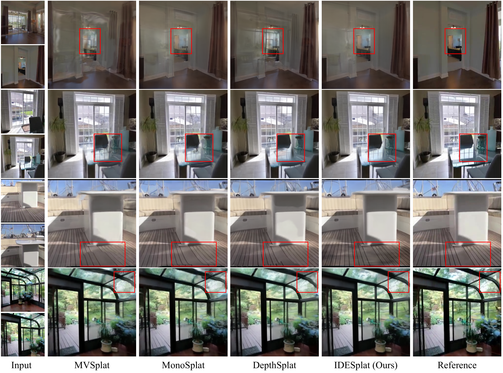

IDESplat
简单摘要
这篇工作要解决的问题是：可推广的 3D 高斯分布旨在使用前馈网络直接预测高斯参数以进行场景重建。
对应的核心做法是：在这些参数中，高斯均值特别难以预测，因此通常首先估计深度，然后进行不投影以获得高斯球中心。
从机制上看，关键设计在于：现有方法通常仅依赖于单个扭曲来估计深度概率，这阻碍了它们充分利用跨视图几何线索的能力，导致不可靠且粗糙的深度图。
训练或推理层面的重点是：为了解决这个限制，我们提出了 IDESplat，它迭代地应用扭曲操作来增强深度概率估计，以实现准确的高斯均值预测。
实验层面的主要信号是：首先，为了消除单个扭曲固有的不可靠性，我们引入了深度概率增强单元（DPBU），它以乘法方式集成了级联扭曲操作生成的极注意图。


简而言之，这篇论文关注的核心是：这篇工作要解决的问题是：可推广的 3D 高斯分布旨在使用前馈网络直接预测高斯参数以进行场景重建。 对应的核心做法是：在这些参数中，高斯均值特别难以预测，因此通常首先估计深度，然后进行不投影以获得高斯球中心。 从机制上看，关键设计在于：现有方法通常仅依赖于单个扭曲来估计深度概率，这阻碍了它们充分利用…
这篇工作要解决的问题是：单场景 3D 高斯溅射 (3DGS) 受益于光栅化友好的管道，使其非常适合实时场景重建，但它的泛化能力有限。
对应的核心做法是：可泛化 3DGS 通过使用前馈网络直接预测所有高斯参数来解决这一缺点，使其能够处理未见过的场景。
从机制上看，关键设计在于：在所有高斯球参数中，高斯均值至关重要，但由于高斯梯度的局部支持性质，很难直接预测，这显着影响整体参数的优化。
训练或推理层面的重点是：现有方法通常需要首先估计像素深度图，然后对其进行反投影以获得高斯球的中心。
实验层面的主要信号是：这种设计通过解耦高斯均值参数的预测来降低网络优化过程的难度，同时增加对准确深度估计的依赖。
核心创新
综合引言与方法部分，这篇论文的核心创新可以概括为以下几方面：
1）问题定义与研究动机
这篇工作要解决的问题是：单场景 3D 高斯溅射 (3DGS) 受益于光栅化友好的管道，使其非常适合实时场景重建，但它的泛化能力有限。
对应的核心做法是：可泛化 3DGS 通过使用前馈网络直接预测所有高斯参数来解决这一缺点，使其能够处理未见过的场景。
从机制上看，关键设计在于：在所有高斯球参数中，高斯均值至关重要，但由于高斯梯度的局部支持性质，很难直接预测，这显着影响整体参数的优化。
训练或推理层面的重点是：现有方法通常需要首先估计像素深度图，然后对其进行反投影以获得高斯球的中心。
实验层面的主要信号是：这种设计通过解耦高斯均值参数的预测来降低网络优化过程的难度，同时增加对准确深度估计的依赖。
2）方法框架与核心模块
这篇工作要解决的问题是：给定一系列稀疏视图图像 ，其中每个图像具有维度 ，并且相应的相机投影矩阵为。
对应的核心做法是：可推广 3DGS 任务的目标是学习将图像映射到 3D 高斯参数的网络。
从机制上看，关键设计在于：其中 是具有可学习参数 的前馈网络。
训练或推理层面的重点是：参数 、 、 和 分别是高斯均值、不透明度、协方差和颜色。
实验层面的主要信号是：深度估计方案如下。
3）实验设计与工程价值
这篇工作要解决的问题是：我们的实验是在三个大型数据集上进行的。
对应的核心做法是：RealEstate10K包含从YouTube下载的房地产视频，分为67,477个训练场景和7,289个测试场景。
从机制上看，关键设计在于：ACID 由无人机捕获的自然场景组成，其中有 11,075 个训练场景和 1,972 个测试场景。
训练或推理层面的重点是：两个数据集均使用运动结构 (SfM) 算法进行校准，以估计相机每帧的内在和外在参数。
实验层面的主要信号是：遵循之前作品的设置，对于 RealEstate10K 和 ACID 数据集，使用两个上下文图像作为输入，并为每个测试场景渲染三个新颖的目标视图。
技术细节
下面按照论文的方法章节结构展开，重点说明模型的关键模块、公式设计和训练策略。
这篇工作要解决的问题是：给定一系列稀疏视图图像 ，其中每个图像具有维度 ，并且相应的相机投影矩阵为。
对应的核心做法是：可推广 3DGS 任务的目标是学习将图像映射到 3D 高斯参数的网络。
从机制上看，关键设计在于：其中 是具有可学习参数 的前馈网络。
训练或推理层面的重点是：参数 、 、 和 分别是高斯均值、不透明度、协方差和颜色。
实验层面的主要信号是：深度估计方案如下。
$$ f_{\bm \theta}: \{ ({\mathcal I}^{i}, {\mathcal P}^i) \}_{i=1}^{V} \mapsto \{ (\bm{\mu}_j, \bm{\alpha}_j, \bm{\Sigma}_j, \bm{c}_j ) \}_{j=1}^{V \times H \times W}, $$
这条公式用于定义模型中的核心计算关系：左侧给出目标量，右侧由输入与参数共同决定。阅读时可先关注 I、i、P、V 的物理/几何含义，再看它们如何影响训练目标或渲染结果。
$$ {\bm F}^{j \to i} = \mathcal{W}({\bm F}^j, {\mathcal P}^i, {\mathcal P}^j, \bm G) \in \mathbb{R}^{\frac{H}{4} \times \frac{W}{4} \times D\times C}, $$
这条公式用于定义模型中的核心计算关系：左侧给出目标量，右侧由输入与参数共同决定。阅读时可先关注 F、j、i、W 的物理/几何含义，再看它们如何影响训练目标或渲染结果。
$$ {\bm C}_{d_m}^{i} = ({\bm F}^i \cdot {\bm F}^{j \to i}_{d_m} / \sqrt{C}) \in \mathbb{R}^{\frac{H}{4} \times \frac{W}{4}}, $$
这条公式用于定义模型中的核心计算关系：左侧给出目标量，右侧由输入与参数共同决定。阅读时可先关注 C、d_m、i、F 的物理/几何含义，再看它们如何影响训练目标或渲染结果。
$$ {\bm I}^{j \to i} = \mathcal{IW}({\bm F}^j, {\mathcal P}^i, {\mathcal P}^j, \bm G) \in \mathbb{R}^{\frac{H}{4} \times \frac{W}{4} \times D}, $$
这条公式用于定义模型中的核心计算关系：左侧给出目标量，右侧由输入与参数共同决定。阅读时可先关注 I、j、i、F 的物理/几何含义，再看它们如何影响训练目标或渲染结果。
$$ {\bm C}^{i} = \mathbf{\Psi}({\bm F}^i, {\bm F}^j, {\bm I}^{j \to i}) \in \mathbb{R}^{\frac{H}{4} \times \frac{W}{4} \times D}, $$
这条公式用于定义模型中的核心计算关系：左侧给出目标量，右侧由输入与参数共同决定。阅读时可先关注 C、i、F、j 的物理/几何含义，再看它们如何影响训练目标或渲染结果。
$$ \bm{A}^{i}=\mathrm{softmax} (\tilde{\bm{C}}^{i}). $$
这条公式用于定义模型中的核心计算关系：左侧给出目标量，右侧由输入与参数共同决定。阅读时可先关注 A、i、C 的物理/几何含义，再看它们如何影响训练目标或渲染结果。


把全文方法串起来看，这篇论文的逻辑基本都遵循同一条主线：先把输入组织成更容易处理的表示，再通过模型结构和损失函数把这个表示推向目标输出，最后用可视化与数值实验共同证明该设计有效。
实验结论
实验部分主要回答两个问题：第一，方法是否真的优于已有基线；第二，这种优势来自哪一个设计决策。
这篇工作要解决的问题是：我们的实验是在三个大型数据集上进行的。
对应的核心做法是：RealEstate10K包含从YouTube下载的房地产视频，分为67,477个训练场景和7,289个测试场景。
从机制上看，关键设计在于：ACID 由无人机捕获的自然场景组成，其中有 11,075 个训练场景和 1,972 个测试场景。
训练或推理层面的重点是：两个数据集均使用运动结构 (SfM) 算法进行校准，以估计相机每帧的内在和外在参数。
实验层面的主要信号是：遵循之前作品的设置，对于 RealEstate10K 和 ACID 数据集，使用两个上下文图像作为输入，并为每个测试场景渲染三个新颖的目标视图。
- 方法在核心指标上的优势与结构设计和训练目标直接相关；
- 消融实验表明，拿掉关键模块后性能与结果质量都有明显回落；
- 论文不仅比较数值，也关注可视化质量、稳定性和泛化能力等更贴近真实使用的信号。
理解评价
这篇工作要解决的问题是：我们提出了 IDESplat，它迭代地应用扭曲操作并集成多级极注意力图来增强深度概率估计，以实现准确的高斯均值预测。
对应的核心做法是：具体来说，我们首先设计一个深度概率增强单元，以乘法方式放大跨视图特征相似性。
从机制上看，关键设计在于：然后，我们通过堆叠多个 DPBU 构建迭代深度估计过程，逐渐识别最可能的深度位置。
训练或推理层面的重点是：此外，在这个迭代过程中，我们逐渐缩小深度搜索范围并增加特征大小，以实现更精确的深度估计。
实验层面的主要信号是：对于其他高斯参数，我们设计了一个高斯聚焦模块来选择最相关的高斯标记进行基于注意力的特征交互。
如果把它当成研究参考，建议重点关注三件事：第一，这套方法真正依赖的归纳偏置是什么；第二，实验中真正拉开差距的模块是哪一个；第三，它的局限究竟来自数据、算力还是监督信号本身。
以下相关论文可以作为进一步追踪的入口：